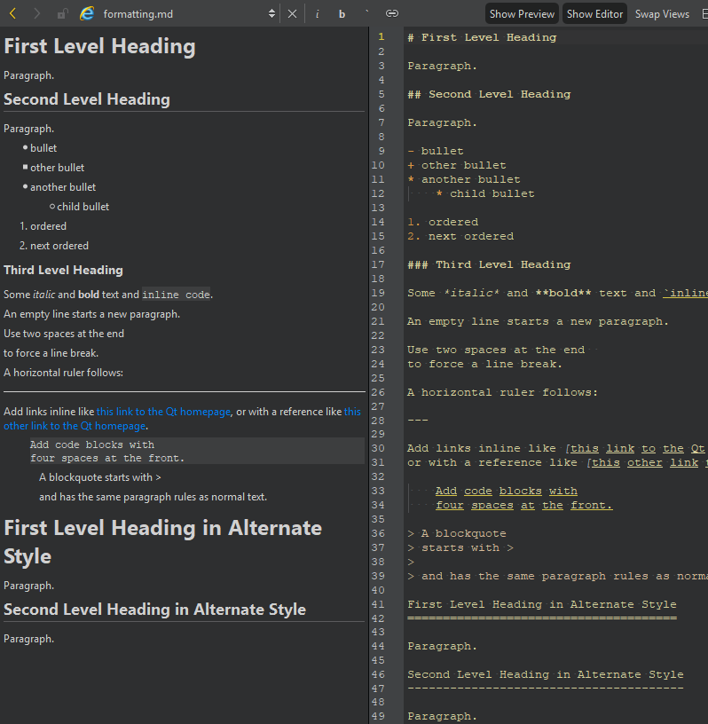

Edit Markdown files
Open Markdown (.md) files, or go to File > New File and select General > Markdown File to create a new file.

When you edit the file in the editor, you can see the changes in the preview.
To hide and show the views, select Show Preview and Show Editor. To swap the places of the views, select Swap Views.
Format text
Use the buttons on the editor toolbar to format text as italic (i), bold (b), or inline code (`), and to create links to web sites ( ).
).
Move to a line and column
The line and column indicator shows information about the current cursor position. Select it to activate the locator, and enter a line and column number to move there.
Follow links to web sites
To follow a link to a web site in the editor:
- Place the cursor on the link.
- Then, do one of the following:
- Press Ctrl+Click (or Cmd+Click on macOS).
- Press F2.
- Go to Follow Symbol Under Cursor in the context menu.